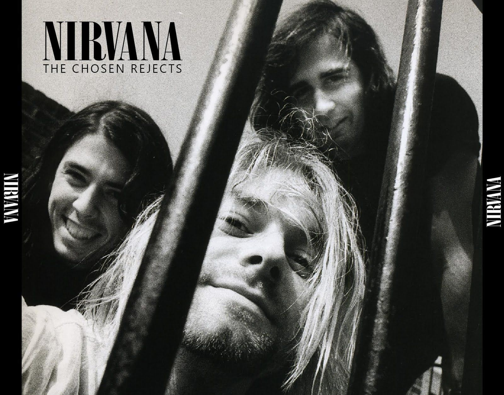

band, (from Middle French bande, “troop”), in music, an ensemble of musicians playing chiefly woodwind, brass, and percussion instruments, in contradistinction to an orchestra, which contains stringed instruments. Apart from this specific designation, the word band has wide vernacular application, from generalized usage (as in “dance band” and “jazz band”) to the very specific (as in “harmonica band,” “brass band,” and “string band”). The term was first used in England to apply to the “king’s band” of 24 violins at the court of Charles II (reigned 1660–85), a group modelled on Louis XIV’s famous group of violins.
The wind, brass, and percussion ensemble that is called a band originated in 15th-century Germany, where ensembles consisting chiefly of oboes and bassoons formed part of the paraphernalia of military life. German musicians joined foreign groups, and wind bands spread eventually through France and England and to the New World. Toward the end of the 18th century, in the wake of the Turkish occupation of large parts of eastern Europe, a style of band music identified as Turkish, or Janissary, music (after the elite troops who, c. 1400–1826, guarded the Turkish sultans), became popular across the Continent. Its characteristically strident sound, produced in the original by shrill flutes and large drums, jangling triangles, cymbals, and Turkish crescents (jingling Johnnies), and its emphatic duple accent appealed to a growing taste for exoticism that led also to the employment of black drummers who marched brandishing their drumsticks in the manner of the later drum major.
 Janissary music inspired some of the greatest composers, including Haydn, in the second movement of his Symphony No. 100 in G Major (The Military); Mozart, in the “Rondo alla Turca” movement of his Piano Sonata in A Major K. 331; and Beethoven, in the incidental music for The Ruins of Athens. By the end of the 18th century, the number of wind instruments had increased greatly, primarily under the impact of the large-scale outdoor ceremonies of the French Revolution, which featured bands of as many as 2,000 musicians. Haydn’s marches written for the Derbyshire yeomanry were scored for trumpet, two horns, two clarinets, two bassoons, and serpent (the wooden precursor of the tuba). In Berlin in 1838, 1,000 wind instruments and 200 drummers were assembled to perform in honour of the Russian emperor. In England the brass band (sometimes called silver band, referring to the metal alloy of many instruments) began to replace the earlier bands of the town “waits” (public musicians) and of village churches at the end of the 18th century. The formation of such bands was encouraged by employers in industrial areas, and the development of the cornopean, a predecessor of the cornet, and of a family of brass instruments, with similar fingering, invented by the French instrument builder Adolphe Sax, facilitated the adoption of brass instruments by amateur players. Among the earliest of the English brass bands were the Stalybridge Old Band (1814) and the famous Besses o’ the Barn (all-brass by 1853). Groups were formed to represent towns, factories, social clubs, and religious organizations such as the Salvation Army; contests, notably at Bell Vue, Manchester, and Alexandra Palace, London, culminated in 1900 in the National Brass Band Festival. Composers such as Sir Edward Elgar, Sir Arthur Sullivan, Gustav Holst, and Benjamin Britten contributed to the band literature. Such works were usually scored for cornets, flugelhorns, horns, B♭ baritones, euphoniums, and basses.